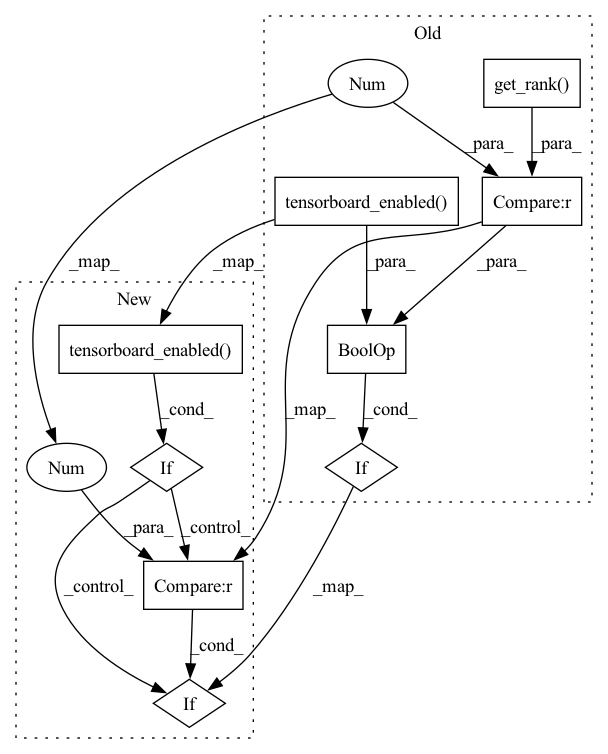

Pattern ID :23022
Before Change
self.tput_timer.stop(report_progress)
if self.is_gradient_accumulation_boundary() and self.tensorboard_enabled(
) and torch.distributed.get_rank() == 0 : // deepspeed tensorboard support for lr
self.summary_events = [(f"Train/Samples/lr",
self.get_lr()[0],
self.sample_count)]After Change
self.tput_timer.stop(report_progress)
// Log learning rate
if self.tensorboard_enabled() :
if self.is_gradient_accumulation_boundary():
if self.global_rank == 0 :
self.summary_events = [(f"Train/Samples/lr",
self.get_lr()[0],
self.sample_count)]In pattern: SUPERPATTERN
Frequency: 3
Non-data size: 9
Instances Fragment ID: 73036264
Project Name: microsoft/deepspeed
Commit Name: 20557f70954f06cbbf8d9fdb1910b63c6af4eb77
Time: 2020-03-26
Author: Shaden.Smith@microsoft.com
File Name: deepspeed/pt/deepspeed_light.py
M Class Name: DeepSpeedLight
N Class Name: DeepSpeedLight
M Method Name: step(1)
N Method Name: step(1)
M Parent Class: Module
N Parent Class: Module
M File Name: deepspeed/pt/deepspeed_light.py
N File Name: deepspeed/pt/deepspeed_light.py
M Start Line: 715
M End Line: 754
N Start Line: 719
N End Line: 760
Before Change
memory_breakdown=self.memory_breakdown())
if self.is_gradient_accumulation_boundary():
if self.tensorboard_enabled() and torch.distributed.get_rank(
) == 0 : // this is done before the log because log resets timers
self.summary_events = [(f"Train/elapsed_time_ms_forward", self.timers("forward").elapsed(reset=False) * 1000.0, self.sample_count), \
(f"Train/elapsed_time_ms_backward", self.timers("backward").elapsed(reset=False) * 1000.0, self.sample_count), \
(f"Train/elapsed_time_ms_backward_inner", self.timers("backward_inner").elapsed(reset=False) * 1000.0, self.sample_count), \After Change
// Log timing
if self.is_gradient_accumulation_boundary():
if self.tensorboard_enabled() :
if self.global_rank == 0 :
self.summary_events = [(f"Train/Samples/elapsed_time_ms_forward", self.timers("forward").elapsed(reset=False) * 1000.0, self.sample_count), \
(f"Train/Samples/elapsed_time_ms_backward", self.timers("backward").elapsed(reset=False) * 1000.0, self.sample_count), \
(f"Train/Samples/elapsed_time_ms_backward_inner", self.timers("backward_inner").elapsed(reset=False) * 1000.0, self.sample_count), \ Fragment ID: 73036259
Project Name: microsoft/deepspeed
Commit Name: 2312f04b0ceb07d81a16d0fc81f327a04beea57d
Time: 2020-06-05
Author: olruwase@microsoft.com
File Name: deepspeed/pt/deepspeed_light.py
M Class Name: DeepSpeedLight
N Class Name: DeepSpeedLight
M Method Name: step(1)
N Method Name: step(1)
M Parent Class: Module
N Parent Class: Module
M File Name: deepspeed/pt/deepspeed_light.py
N File Name: deepspeed/pt/deepspeed_light.py
M Start Line: 851
M End Line: 878
N Start Line: 853
N End Line: 885
Before Change
allreduce_gradients: If this is False, then gradient averaging will be skipped. Default is True.
if self.is_gradient_accumulation_boundary() and self.tensorboard_enabled(
) and torch.distributed.get_rank(
) == 0 : // deepspeed tensorboard support for loss
self.sample_count += (self.train_micro_batch_size_per_gpu() *
torch.distributed.get_world_size() *
self.gradient_accumulation_steps())After Change
// Log training Loss
if self.tensorboard_enabled() :
if self.is_gradient_accumulation_boundary():
if self.global_rank == 0 :
self.sample_count += (self.train_micro_batch_size_per_gpu() *
self.dp_world_size *
self.gradient_accumulation_steps()) Fragment ID: 73036262
Project Name: microsoft/deepspeed
Commit Name: 20557f70954f06cbbf8d9fdb1910b63c6af4eb77
Time: 2020-03-26
Author: Shaden.Smith@microsoft.com
File Name: deepspeed/pt/deepspeed_light.py
M Class Name: DeepSpeedLight
N Class Name: DeepSpeedLight
M Method Name: backward(3)
N Method Name: backward(3)
M Parent Class: Module
N Parent Class: Module
M File Name: deepspeed/pt/deepspeed_light.py
N File Name: deepspeed/pt/deepspeed_light.py
M Start Line: 624
M End Line: 639
N Start Line: 627
N End Line: 642